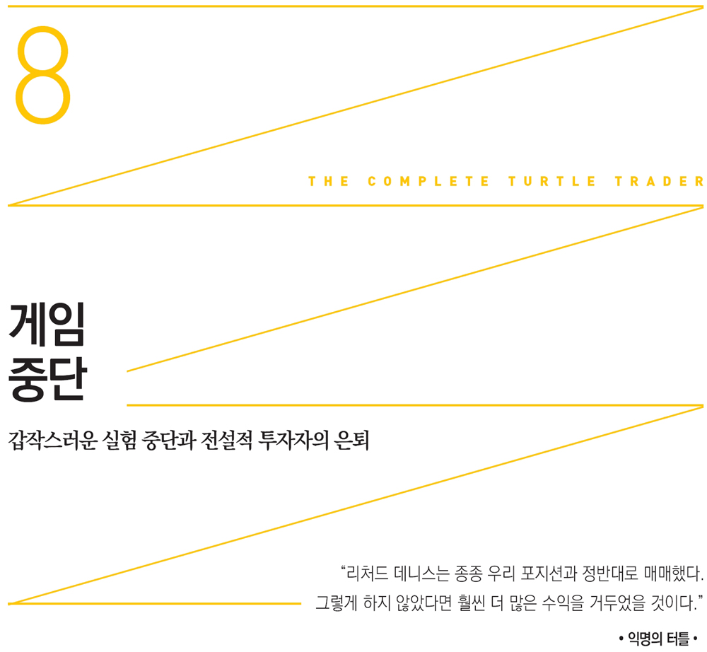
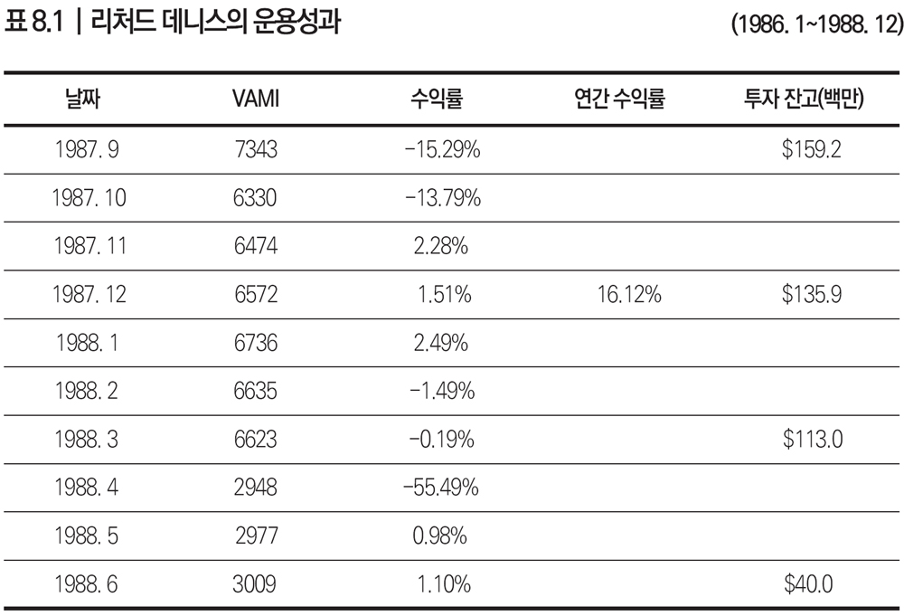

1988년 초의 큰 정치적 뉴스는 소련의 붉은 군대가 아프가니스탄에서 철수했다는 소식이었다. 비즈니스 세계에서는 콜버그 크라비스 로버츠 앤 컴퍼니Kohlberg Kravis Roberts&Co.가 RJR 나비스코RJR Nabisco에 대한 차입매수를 단행했다. 이는 사상 최대 규모로 이보다 더 큰 인수합병 건으로는 2007년 2월에 있었던 블랙스톤 그룹Blackstone Group의 에쿼티 오피스Equity Office 매수 사례가 있다. 이때 리처드 데니스가 실험을 느닷없이 중단하면서 터틀들은 당장 발등에 떨어진 불을 꺼야 했다.
실험은 끝났다. 리처드 데니스가 프로그램 종료를 알리는 내용의 팩스를 터틀들에게 보냈다. 당시 데니스는 고객 돈을 받아 굴리고 있었는데, 마이클 밀켄의 투자은행 드렉셀 번햄 램버트와 함께 두 개의 공모펀드를 운용하고 있었다. 이 펀드들도 엄청난 손실을 입고 폐쇄되었다. 터틀 실험 중단의 원인이 공식적으로 알려지지는 않았지만 눈이 휘둥그레질 정도로 심각한 리처드 데니스의 실적을 보면 그 이유를 짐작할 수 있다.
1988년 손실이 -55퍼센트에 이르면서 게임의 양상이 바뀌었다. 그의 공모펀드 성과도 최악이었지만 아버지마저 세상을 떠났다. 어느 터틀은 프로그램 중단 원인이 가족 문제 때문이라고 보았다. 분명 힘든 시기였다. 하지만 4월 터틀의 성적은 그리 나쁘지 않았다. 대체로 손실이 -10퍼센트에서 -12퍼센트 수준에 그쳤다(부록 4 참조). 이는 리처드 데니스의 손실에 비하면 아무것도 아니었다.
그렇기는 하지만 갑작스러운 실험 중단으로 터틀들은 충격에 빠졌다. 프로그램 중단 소식에 짐 디마리아도 당황할 수밖에 없었다. “갑작스럽게 끝나버렸습니다. 너무 빠른 결정이었죠. 그들이 월요일 아침에 와서 이렇게 통보했습니다. ‘이번 주 금요일로 프로그램을 종료합니다.’ 저는 ‘새 일자리를 찾아야 하는구나.’라고 생각했습니다.” 리처드 데니스의 손실이 너무 커져 프로그램을 종료할 수밖에 없었다고 주장하는 사람들이 있었지만 짐 디마리아는 리처드 데니스의 개인적 손실 때문이 아니라고 했다. 짐 디마리아는 터틀의 운용자금은 결국 그의 돈이었고 그냥 실험을 그만두고 싶었던 것뿐이라고 주장했다.

VAMI(Value Added Monthly Index) : 투자원금 1,000달러가 매월 어떻게 달라지는지 나타내는 지수
출처: 바클레이즈 퍼포먼스 리포팅(www.barclaygrp.com)
리처드 데니스는 투자업계를 떠난다고 선언했다. 그리고 앞으로는 정치 운동에 전념하겠다고 밝혔다. ‘진보’라는 표현을 더럽히는 세력을 꺾어버리고 싶다고 했다. 그는 곧바로 자유의지론에 빠져들었는데 개인의 자유를 중시하는 자유주의적 이상이 사회를 강건하게 만든다고 보았다. 하지만 다른 사람들은 그의 정치적 이상이 가식에 불과하다며 폄하했다. 사람들은 그가 손실이 너무 커서 정치에 눈을 돌리게 되었다고 여겼다.
드렉셀 펀드의 심각한 손실이 논란거리가 되었을 때 리처드 데니스는 고객에게도 일부 책임이 있다고 주장했다. 고객들이 자신의 트레이딩 스타일을 잘 이해하지 못했고 손실이 나기 시작하자 믿음을 잃게 되었다고 생각했다. 그는 고객들이 (지금이든 1980년대 초든) 왜 자기처럼 굳건한 의지를 지니지 못하는지 도무지 이해할 수 없었다. 드렉셀 관리팀이 자기를 저버린 것도 의아해했다. 그들이 찾아왔을 때 이렇게 항변했다. “이게 도대체 무슨 짓이요?” 그는 플로어에서 매매할 때에도 손실이 -50퍼센트를 넘은 적이 몇 번 있었다. 드렉셀에게 물었다. “이렇게 하라고 누가 시켰나요?”
물론 펀드를 파는 사람들은 리처드 데니스가 운용하는 드렉셀 펀드에 투자하는 고객들에게 과거의 ‘좋았던 실적’만 강조한다. 어쨌든 그는 전문 트레이더다. 따라서 책임질 사람은 대중에게 펀드를 파는 브로커가 아니라 바로 그였다. 그렇지만 한때 ‘피트의 왕자’로 군림했던 그가 드렉셀 펀드 문제로 낙담할 리 없었다. 그는 최악의 순간에도 자신감을 잃지 않았다. “투자자들이 보아야 하는 것은 제가 18년 동안 쌓아 올린 실적입니다.”
드렉셀 임원들은 1988년 리처드 데니스가 운용했던 펀드의 청산과 관련하여 벌어진 일련의 사건에 대해 끝내 입을 다물었다. 드렉셀 전 임원이었던 리처드 샌더Richard Sander는 무슨 일이 있어났는지 설명해달라는 내 질문에 정중하게 거절했다. “절대 알려드릴 수 없습니다.” 그가 시카고 트레이딩 업계의 거물이라는 점에서 이는 어쩌면 당연한 답변이었다.
하지만 리처드 데니스도 입을 다문 건 아니었다. 그는 당시의 시련에 맞서 선언했다. “앞으로는 천금을 준다 해도 공모펀드는 운용하지 않겠습니다.”
손실이 나도 낙담하지 않는 사람으로 유명한 리처드 데니스가 좌절감을 드러내는 말을 했다니 놀라지 않을 수 없었다. 하지만 그를 동정하는 사람은 많지 않았다. 그는 한때 수억 달러를 벌어들인 신동이었다. 더욱이 정치인을 후원하며 영향력을 행사하기도 했다. 제로섬 게임에서 그에게 돈을 잃은 경쟁자들은 그의 고통을 외면했다.
얼마 뒤 드렉셀 펀드에 투자했던 고객들이, 리처드 데니스가 원칙을 벗어나 투자했다고 주장하며 그를 상대로 소송을 제기했다. 미 지방법원의 밀턴 폴락Milton Pollack 판사는 약 6,000명의 투자자들이 250만 달러를 나눠 갖고 리처드 데니스가 향후 3년간 벌어들이는 수익의 절반을 취할 수 있도록 중재했다. 대신 리처드 데니스와 그의 회사는 불법행위는 하지 않았다는 판결이 났다.
큰 손실과 잇따른 소송에 화가 났을 법했지만 시카고의 살아있는 전설은 자신이 겪은 일을 냉정히 되돌아보았다. “슬프게도 현 법률체계는 허점이 많아 지난 일을 꼬투리 삼아 소송을 제기하면 떠안아서는 안 되는 책임까지 지게 됩니다. 제가 머리가 아픈데도 아스피린을 먹지 않았다고 말하면 아마 이를 빌미로 소송을 제기하는 사람도 있을 겁니다.” 리처드 데니스는 트레이딩 성과의 상당 부분이 통제할 수 없는 요인에 의해 언제든 달라질 수 있다고 생각했다. 그는 바로 이 시기가 그런 경우라 여겼다.
과연 당시 부진한 성과가 통제할 수 없는 요인 때문이었을까? 1988년 4월 터틀 수련생들은 -50퍼센트의 손실을 기록하지 않았다. 반면 리처드 데니스는 -50퍼센트를 넘겼다. 그의 추종자들은 터틀 수련생들이 리처드 데니스의 뛰어난 운용성과를 바탕으로 아주 공격적으로 투자하는 집단이었다고 생각했지만 이들의 운용전략은 스승의 투자전략과 같지 않았다. 데니스가 본 손실은 순전히 추세추종 전략만으로 매매한 결과는 아니었다. 그렇지만 구체적으로 어떻게 다르게 운용했는지는 알 방법이 없다.
헤지펀드 산업의 창시자이자 수십억 달러를 굴리는 영국 헤지펀드 운용사 맨Man의 창립 멤버 중 한 명인 래리 하이트Larry Hite는 그때 리처드 데니스가 어떻게 운용했는지 잘 모른다고 말했다. 당시에는 그토록 큰 손실을 유발할 만한 시장 움직임이 없었기 때문에 더욱 이해할 수 없다고 했다.
데이비드 체블도 래리 하이트와 마찬가지로 리처드 데니스의 업적을 인정하면서도, 경쟁자들이 꽤 괜찮게 운용하던 그때 그가 매매 결정을 어떻게 내렸는지에 대해서는 의문을 제기했다. “리처드 데니스가 적은 돈을 엄청나게 불렸다는 사실은 경탄할 만합니다. 문제는 그가 공모펀드를 운용하면서 규칙을 따랐는지 여부입니다. 그는 같은 시기에 운용했던 다른 터틀보다 하락폭과 변동성이 훨씬 더 높았다고 봅니다. 저는 리처드 데니스가 이룬 업적에 대해서는 진심으로 경의를 표합니다. 하지만 그도 인간이고 비난받아야 할 때는 받아야 한다고 생각합니다.”
현장에서 혼란스러운 상황을 목격했던 마이크 섀넌도 다른 여러 터틀과 마찬가지로 리처드 데니스의 지나치게 위험한 매매 행태에 깜짝 놀랐다. 마이크 섀넌은 포지션 한도 때문에 터틀들이 리처드 데니스의 포지션 상황을 늘 알고 있었다고 밝혔다. 상품선물거래위원회Commodity Futures Trading Commission는 특정 트레이더가 한 시장에서 너무 많이 매매하지 못하도록 한도를 설정해놓고 있었다.
터틀들이 리처드 데니스의 매매 포지션을 알고 있었던 이유가 또 있었다. 그의 트레이딩 내역이 공개되었기 때문이다. 마이크 섀넌은 리처드 데니스가 드렉셀 펀드를 운용하고 있을 당시 터틀은 S&P500지수를 한두 유닛만 거래할 수 있었지만 리처드 데니스는 열에서 열다섯 유닛까지 보유하고 있었다고 주장했다. 아울러 새넌은 과도한 매매는 파멸을 불러올 수 있다고 누누이 강조한 리처드 데니스가 어째서 그렇게 위험한 운용을 했는지 터틀들조차도 납득하지 못했다고 말했다. “날을 잡아 실제로 계산해보았더니 그의 위험 수준이 우리보다 100배나 높았습니다.”
리처드 데니스가 터틀보다 100배나 더 높은 위험을 부담했다니 어처구니가 없다. 그는 수련생들에게는 제대로 트레이딩하도록 가르치면서 정작 자기 자신은 잘 관리하지 못했던 것이다. 그는 분명 훌륭한 업적도 이뤘지만 단점도 있었다.
놀라운 점은 리처드 데니스 본인은 손실을 보았지만 일종의 헤지 역할을 하는 터틀 수련생들이 뛰어난 성과를 거둔 덕분에 전체 수익률은 플러스였다는 사실이다. 실험을 진행하던 4년 동안 터틀 수련생들에게 자금을 맡김으로써 벌어들인 수익은 얼마였을까? 그는 눈도 깜빡하지 않고 대답했다. “엄청났습니다. 총수익이 1억 5,000만 달러, 순이익은 1억 1,000만 달러였습니다. 처음에는 성과보수를 10퍼센트부터 시작했습니다. 굳이 많이 줄 필요가 없었죠. 원래 저희 돈이었고 위험도 우리가 떠안았으니까요.”
하지만 리처드 데니스가 투자 세계를 떠나있는 사이 월가에서의 그의 명성은 치솟았다. 브루스 코브너Bruce Kovner와 에드워드 세이코타Edward Seykota에서부터 래리 하이트와 폴 튜더 존스Paul Tudor Jones에 이르기까지 최고의 트레이더들을 다룬 책이 출간된 덕분이었다.
저자 잭 슈웨거Jack Schwager는 《시장의 마법사들Market Wizard》에서 리처드 데니스를 다룬 장 제목을 “전설적 투자자의 은퇴”라고 붙이고 그가 겪었던 어려운 시기의 불명예를 일부 씻어주었다. 잭 슈웨거가 다룬 리처드 데니스 이야기는 일종의 고전이 되었다. 리처드 데니스가 숨은 전설이 되어가던 시기에 그가 한창 날리던 시절이 집중 부각된 책이 나오자 그를 전설로 믿는 사람이 부지기수로 늘어났다.
데니스의 명성이 하늘 높은 줄 모르고 치솟자 순회 연설 기회가 줄을 이었다. 온갖 투자 세미나의 연사로 초빙되었던 것이다. 1970년대 이후 그의 말을 듣고자 했던 사람은 그리 많지 않았다. 하지만 《시장의 마법사들》을 읽은 사람이 수없이 많아진 지금은 저마다 다음에 모집할지도 모르는 터틀 수련생으로 뽑히는 꿈을 꾼다. 물론 그런 계획은 없지만 말이다.
그즈음 시카고에서 열린 시카고상품거래소 컨퍼런스에서 리처드 데니스를 만난 찰스 포크너Charles Faulkner는 다음과 같이 말했다. “잭 슈웨거 씨가 사회를 맡은 패널 토의에서 리처드 데니스가 토론자로 나온다는 소식을 듣고 바로 티켓을 샀습니다. 트레이더들이 그의 시스템을 왜 따라하기 어려운지 정말 궁금했거든요.”
찰스 포크너는 리처드 데니스가 마치 인기 록스타처럼 대접받았다고 했다. 리처드 데니스가 무대를 내려오자 터틀을 꿈꾸는 무리들이 그에게 구름처럼 모여들었다. 리처드 데니스는 그토록 많은 무리들이 자신에게 뭔가를 원하는 광경을 보자 경계하는 눈초리였다고 찰스 포크너가 말했다.
그날 저녁 찰스 포크너는 리처드 데니스에게 자신을 간단히 소개할 기회가 있었다. 《시장의 마법사들》 제2탄에 나오기도 하는 찰스 포크너는 원래 사람 표정과 마음을 잘 읽었는데 당시 리처드 데니스의 모습을 보고 깜짝 놀랐다. “저는 그를 자세히 살필 수 있을 만큼 가까이 있었는데 정말 힘든 시기를 보내고 있는 기색이 역력했고 자신도 제대로 추스르지 못하는 것처럼 보였습니다. 이 모습을 본 저는, 성공하는 트레이더가 되려면 엄청난 노력 외에 학문 외적으로 무엇이 필요한지 궁금해졌습니다. 성공의 대가를 아주 비싸게 치른 사람이 바로 제 앞에 있었으니까요.”
그동안 살면서 격랑이 가장 큰 시기를 겪은 리처드 데니스에게 휴식이 필요했든 그렇지 않았든 터틀 수련생들은 결국 졸업을 했다. 이들이 스승 없이도 계속 승승장구했는지 알아볼 때가 되었다. 이제는 리처드 데니스라는 안전망이 없는 실제 실험이 될 터였다.